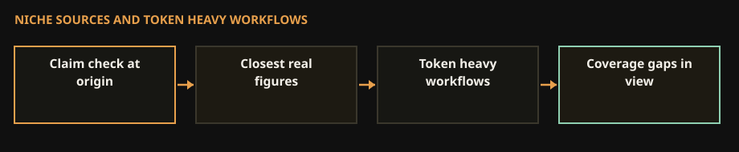
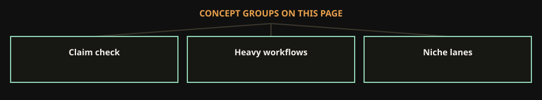

Niche Sources and Token Heavy Workflows
Round 2 sweep of niche blogs, podcasts, newsletters, community threads and small creator videos, plus a check of the per employee token claim at origin. Round 1 held official docs and headline sources. This page holds the rest, with coverage gaps in plain view.

The token claim: verdict
The claim that Anthropic and OpenAI state an average of 5,000 to 10,000 tokens per employee per day matches no source from either firm. Fact: 5,000 tokens is near two pages of text. One doc sub agent task in this sweep used 55,400 to 116,100 tokens per sub agent. Both firms state use in dollars per day, in multiples, or in percentiles. No tokens per day average for staff exists in any source found.
Likely mix up paths: a dollars figure read as tokens, or the swyx Claude Mods note of near 5 to 6k input tokens per supervisor check, or the Superpowers note of a near 100k token plan talk. Each path sits in the tables with a confidence mark.
Closest real figures
| Figure | Unit | Population | Origin | Status |
|---|---|---|---|---|
| Near 13 dollars per developer per active day; 150 to 250 dollars per month; 90 percent of users under 30 dollars per active day | Dollars | Enterprise Claude Code customers | Anthropic costs docs, current at crawl 16 to 18 Nov 2026 | Medium High, official index text |
| Average near 6 dollars per day per user; some Anthropic engineers past 1,000 dollars in one day | Dollars | Claude Code users; Anthropic engineers | Latent Space transcript, 2025 | High, transcript opened |
| Median researcher past 600 dollars per day; 90th percentile past 7,000 dollars; 3.1 agent work days per human work day | Dollars at list prices | OpenAI research org | OpenAI research acceleration post, mid Aug 2026 data | High, primary opened |
| Median researcher near 2,400 dollars per day; 90th percentile near 23,000 dollars; agents finish 46 percent of 2 to 4 hour research tasks solo | Dollars at list prices | OpenAI researchers | OpenAI Jagged Frontier report, 18 Nov 2026, Oct data | Medium High, official index plus reports |
| Median researcher past 50x monthly output tokens, Jun 2026 vs Nov 2025; Codex at 99.8 percent of worker output tokens; past 10 percent run 3 plus agents per week | Multiples and shares, no day total | All OpenAI workers | OpenAI Codex paper, Jun 2026 | High, paper opened |
| Past 80 percent of merged code from Claude in May 2026; safety swarm: 800 agent hours, near 18,000 dollars, 97 percent of gap back | Share and dollars | Anthropic engineers | Anthropic Institute, When AI builds itself | High, primary opened |
Token heavy workflows: how high use happens
High token use comes from structure, not from long chats. Fleets run in parallel, agents wake on schedules, review bots fire per change, and doc or research swarms read whole corpora. One human steers, many agents burn.
| Workflow | Setup | Rhythm | Verification | Volume or cost |
|---|---|---|---|---|
| Parallel terminal plus web fleet | Cherny: 5 terminal Claudes plus 5 to 10 web, one shared CLAUDE.md | 10 to 30 PRs per day | Simplify and verify sub agents, browser end to end test per change | Past 1,000 dollars in one day for some engineers |
| Gas Town orchestrator | Yegge: Mayor, Polecats, Refinery, Witness, Deacon, Beads tracker, tmux | 20 to 30 instances held live | Refinery merges one at a time, Witness frees stuck workers | No metered figure in source |
| Research org saturation | OpenAI: Codex agents on research tasks, 3 plus at once for past 10 percent of staff | Agents finish 46 percent of 2 to 4 hour tasks solo | Human review, solo finish rate as the metric | Median 2,400 dollars per day, Oct 2026 |
| End of Day Agents | Hashimoto: research, probes and triage start in the last 30 minutes | Reports wait at next start, most runs end inside 30 minutes | Human reads reports, errors turn into rules or checkers | No cost figure in source |
| Self wake schedules | Ball at Amp: agent sets its own check times after a ship, plus daily care checks | Runs of 20 to 45 minutes, async, no watch | Benchmarks and proof of done, CI and logs as ground truth | Repo past 2M lines, 99 percent AI made per source |
| Doc sub agent swarm | Willison: one phrase starts 5 parallel doc sub agents | Bursts of 1 to 2 minutes each | Human reads the docs | 55.4k to 116.1k tokens per sub agent |
| Review bot on each change | Anthropic: one reviewer pass per code change | Always on | The bot is the check layer, humans sample | Would catch near one third of past incident bugs, per Anthropic |
| Quiz gate review | Litt: /explain-diff writes an explainer and a 5 question quiz | Daily use | Human must pass the quiz before a send | No cost figure in source |
| Chief of staff agent | Jason Liu of the Codex team: pinned chats, markdown vault, heartbeat checks on Slack, mail and Linear, GOAL and PLAN files per project | Heartbeat rhythm, daily briefs | Goal files hold pass rules, worklog holds the trail | Single secondary summary only |
| Token max subscription fleet | Theo: nine subscriptions, T3 Code plus Tailscale | 10 plus agents at once, no watch | Council score skill per one secondary | Subscription count only |
Pattern across sources: worktree or tmux isolation per agent, a fresh context agent as reviewer, an instruction file as the asset that compounds, and a check the agent can run alone. Human watch time is the scarce input. Token spend is the cheap input.
Niche blogs and personal sites
| Source | Link | Concrete techniques | Confidence |
|---|---|---|---|
| Harper Reed, spec pipeline post, 16 Feb 2025 | Source | Idea talks to spec.md, then prompt_plan.md and todo.md, then prompt by prompt build. Brownfield: mise tasks wrap repomix and the llm CLI for tests, review and issue drafts. | High, primary opened |
| Simon Willison, sub agents tag page, 2025 | Source | Say the words use sub agents. Five parallel doc sub agents on Datasette used 55.4k to 116.1k tokens each. Page also curates Vincent, Ronacher and Breunig. | High for own posts |
| Mitchell Hashimoto, My AI Adoption Journey, 5 Feb 2026 | Source | End of Day Agents: last 30 minutes starts research, probes and triage. Harness rule: each error adds an AGENTS.md line or a checker tool. One agent at a time, 10 to 20 percent of his day. | High, primary opened |
| Thorsten Ball, How Thorsten Ball Uses Amp, Oct 2026 | Source | Prompt the what, not the how. Agent sees the full SDLC: CI, logs, flags, Grafana. Self wake schedules: check again in two hours. Runs of 20 to 45 minutes, async. | High, transcript opened |
| Steve Yegge, Welcome to Gas Town, 1 Jan 2026 | Source | Orchestrator holds 20 to 30 Claude Code instances: Mayor, Polecat workers, Refinery merge queue, Witness, Deacon patrol. Cost note from author: expensive as hell, second account in use. | High, primary opened |
| Geoffrey Litt, Code like a surgeon, 24 Oct 2025 | Source | Agents take secondary tasks async, core design stays hands on. Later work: /explain-diff skill writes an explainer plus a 5 question quiz. No send before a quiz pass. | Medium High, index text |
| Armin Ronacher, Agentic Coding Recommendations, 12 Jun 2025 | Source | Max plan, claude-yolo in Docker, one log file the agent can read, MCP only when a CLI fails, Go for fast tests, code over new dependencies. | Medium High, mirror text |
| Drew Breunig, How to Fix Your Context, 26 Jun 2025 | Source | Four context failures: poison, distraction, confusion, clash. Six tactics: RAG, tool loadout, quarantine by sub agent, prune, summarize, offload to plan.md. | Medium High, index text |
| Eugene Yan, Building News Agents, 4 May 2025 | Source | Q CLI main agent splits 6 feeds into 3 chunks, spawns 3 tmux sub agents with FastMCP RSS tools, merges one summary. Demo run: 124 items, 42 categories. | High, primary opened |
| Maggie Appleton, Planning with Agents | Source | Design critique, not a workflow: her grill skill asks near 40 questions, humans fade by question 8. Agents write near 4,500 words per minute, humans read near 240. Review load is the limit. | High, critique only |
Podcasts with transcripts or show notes
| Episode | Link | Workflow claims | Confidence |
|---|---|---|---|
| Latent Space, Claude Code episode, Cherny and Wu, 2025 | Source | Full transcript with time marks. Parallel work, tmux sessions, slash commands, non interactive mode. Intro states an average near 6 dollars per day per user, with some Anthropic engineers past 1,000 dollars in one day. | High, transcript opened |
| Lenny Podcast, Head of Claude Code, Cherny, 19 Feb 2026 | Transcript mirrors in the Lenny data repo on GitHub; episode page not opened | Quote form from transcript mirrors: 100 percent of my code comes from Claude Code, 10 to 30 PRs per day, five agents live in one talk moment. Fleet detail matches his X thread reports. | Medium High, mirrors plus reports |
| Pragmatic Engineer, Hashimoto episode, 25 Feb 2026 | Source | Time mark 1:19:13: an agent always runs in the background. If he codes, an agent plans. If agents code, he reviews. Research starts before he leaves home. | High, show notes opened |
| Cognitive Revolution, AMA part 1, 9 Jan 2026 | Show notes page, not opened in full | Show notes hold a Claude Code workflow chapter at 28:01. No transcript claims stand extracted in this round. | Low, chapter mark only |
Newsletters and Substacks
| Source | Link | Concrete content | Confidence |
|---|---|---|---|
| Interconnects, Get Good at Agents, Nathan Lambert | Source | GPT-5 Pro plans, Claude Code with Opus builds, deep research on stuck points. Instances run on a DGX Spark at home through dinner and meetings. Date conflict in sources: Jan 2026 vs Jan 2025 in one list. | Medium High, index text |
| Addy Osmani, My LLM coding workflow going into 2026, 4 Jan 2026 | Source | Spec, plan, small chunks. Context pack tools gitingest and repo2txt. Claude Code for hard work, Cursor inline, Copilot completions. | Medium, index text |
| Latent Space newsletter, Claude Mods, swyx | Source | A supervisor mod fires in 99 of 111 turns at near 5 to 6k input tokens per check on a 50k token session. One guess for the origin of the 5k to 10k mix up. | Low Medium, index only |
| Import AI, Jack Clark | Newsletter site, no workflow issue found | No concrete personal workflow issue found. Honest negative for this lane. | Searched, zero for workflow |
| Hamel Husain, evals posts | Source | Eval method, not a daily workflow: three eval levels, agent eval in two phases, step level diagnostics with tokens and steps per run. | Medium, index text |
Community sources
| Source | Link | Content | Confidence |
|---|---|---|---|
| Ask HN, What is your current AI agentic setup, 4 Nov 2026 | Source | 663 comments. One tally counts Claude Code 180, Codex 103, 156 people on two or more agents. Patterns in comments: worktree per agent, fresh agent as reviewer, container isolation. | Medium patterns, counts Low Medium |
| Show HN, 3 agents non stop for 3 days | Source | Headless claude -p and codex exec, Beads queue, worktrees, a validator merges. Poster claim: 3 agents can burn the 200 dollar plan limit in 30 minutes. | Medium, firsthand self report |
| Show HN, 20 plus agents with one orchestrator skill | Source | A lean collab orchestrator skill coordinates more than 20 Claude Code agents. | Medium Low, index only |
| Reddit r/ClaudeAI, Kithland build post, 4 Nov 2026 | r/ClaudeAI post, via one secondary radar | Self report: near 590 sessions, 270 sub agents, near 20B tokens with most from cache, near 7,500 dollars at list prices, 450 plus agent hours in near 90 hours. | Low, one self report |
| ku5ic, After knowledge discipline | Source | Near 150KB of markdown config: CLAUDE.md, command namespaces, 6 skills, guard hooks for bash and edits, one run checks script. | Medium, index text |
| Agentic Reading List | Source | 216 posts from 2024 to 2026, tiered and dated, one line per post. A round 3 dig source. | Medium, list checked |
Niche YouTube
| Video | Link | Claims | Confidence |
|---|---|---|---|
| Theo, Token maxing, 1 Oct 2026 | Source | Nine Claude and Codex subscriptions, each limit used before refill, 10 plus agents at once with no watch, T3 Code plus Tailscale as fleet layer. Transcript based secondary page. | Medium, transcript secondary |
| WorldofAI, Claude Code plus Codex shared workspace, 2026 | Source | Tracer runs both agents in one workspace: split by strength, context swap, cross review of fixes. Transcript page with time marks. | Medium, transcript secondary |
| AI Jason, Tmux plus Fable cost cut, Jul 2026 | YouTube channel page, video not opened | Coordinator and executor CLAUDE.md split: frontier model plans, low cost model executes. Claim rests on one citing document. | Low, single chain |
| Matthew Berman, savings video, Jul 2026 | YouTube channel page, video not opened | Tier math from one citing document: frontier only near 81 dollars per task, mixed pipeline near 25.55 dollars. Creator numbers, no check in this round. | Low, single chain |
| Fireship | YouTube channel, searches ran in this round | Zero useful agent workflow results in this round. | Zero, honest |
One creator lane stands out by rule: a search result for one named creator carried a source safety flag in this round. No claim from that lane enters this page.
Coverage honesty for round 2
Zero result lanes: Fireship workflow content, antirez as a workflow source, Import AI workflow issues, Grok specific practitioner workflows in niche lanes, and Dwarkesh, Fridman, Machine Learning Street Talk and Practical AI episodes with a transcript and a daily workflow.
Lanes open, not zero: Chain of Thought, AI Tidbits, The Batch, Not Boring and The Diff newsletters stand unsearched to completion. Reddit r/ChatGPTCoding and r/LocalLLaMA megathreads stand unsearched. AI Engineer summit and YC talk transcripts stand unsearched. Willison guide pages stand listed, not opened.
Claims on one secondary summary alone: the Jason Liu chief of staff system, the Theo council skill, the OpenAI 5.7 agent work days ratio, Anthropic filing figures from press reports, Ask HN tool counts, AI Jason and Berman video numbers, the Reddit 20B token self report, and the Interconnects date. Each claim holds its mark in the tables.
Two men share the name Jason Liu in these sources: the Instructor creator and a Codex team member. This page keeps both apart. No merge.
One token heavy day, safe form: tutorial
- Outcome: run a fleet day on one repo with proof at the end.
- Prerequisites: one worktree per agent, a rule file, a test command, a spend cap in the account.
- Step 1: write three task cards with pass rules before any agent starts.
- Step 2: start one build agent per card, one fresh reviewer on hold.
- Step 3: at midday, run the reviewer on each diff. Kill any run with no log past 30 minutes.
- Step 4: start one doc swarm on the changed area. Cap the swarm at five agents.
- Step 5: close with a handoff note: state, proof, spend, next act.
- Acceptance check: three diffs, three review notes, one handoff, a spend line you can state in one breath.

Visual map of this page
Three views of one page: a Mermaid flow for work order, a markmap for concept groups, and a read guide for the flow.
Mermaid source, for offline read
flowchart TD A[Claim: 5k to 10k tokens per day] --> B[Search both firms at origin] B --> C[No such figure found] C --> D[Real figures: dollars per day] D --> E[Workflows that burn tokens] E --> F[Fleets, schedules, swarms, review bots]
How to read the flow diagram. Step 1: start at the left box. Step 2: follow each arrow to the next stage. Step 3: at a branch box, read both paths before a choice. Step 4: a loop arrow means work returns for one more pass vs a test.
Markmap: concepts on this page
- Niche Sources and Token Heavy Workflows
- Claim check
- No tokens per day average
- Dollars, multiples, percentiles
- Scale: one task past 55k tokens
- Heavy workflows
- Cherny fleet
- Gas Town 20 to 30
- OpenAI research saturation
- Review bot per change
- Niche lanes
- Blogs and dotfiles
- Podcast transcripts
- Newsletters
- Community threads
- Claim check